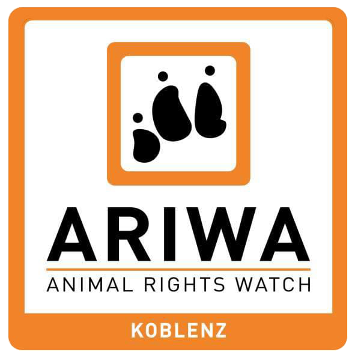

Rechtliches
Impressum

ARIWA Koblenz
Animal Rights Watch · Koblenz
Angaben gemäß § 5 TMG
ARIWA Koblenz
Deutschland
Kontakt
E-Mail: koblenz@ariwa.org
Website: veganer-markt-koblenz.de
Verantwortlich für den Inhalt nach § 55 Abs. 2 RStV
ARIWA Koblenz
Datenschutz
Informationen zur Verarbeitung personenbezogener Daten findest du in unserer Datenschutzerklärung.
Haftungsausschluss
Trotz sorgfältiger inhaltlicher Kontrolle übernehmen wir keine Haftung für die Inhalte externer Links. Für den Inhalt der verlinkten Seiten sind ausschließlich deren Betreiber verantwortlich.